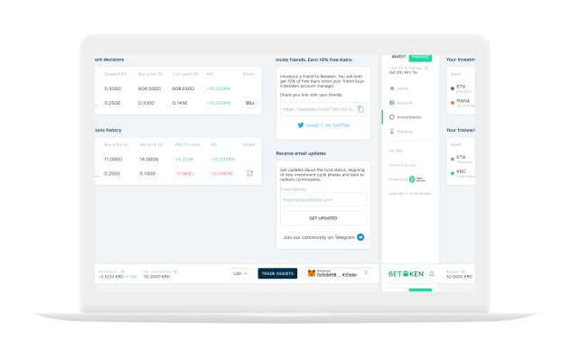

ワンクリックでファンドマネージャーになりましょう。
ワンクリックでファンドマネージャーになりましょう。
彼らはあなたがビデオを作るために"資格"を必要としていたと言いました...
そして、YouTubeが起こりました。 彼らはニュースを作るために資格が必要だと言った...
そして、ソーシャルメディアが起こった。 彼らは投資をするための資格が必要だと言った...
そしてBetokenが起こった。
もうKairoトークンを持ってる？ ベータ版を起動する
マネージャーの旅
誰でもBetokenのマネージャーになることができ、能力と功績だけで判断されます。


マネージャーアカウントを購入する
管理を開始するには、マネージャーアカウントを購入する必要があります。Manager account. Kairoトークンがあらかじめロードされており、これを使用して投資判断を下すことができます。
投資スキルを示す
dAppで直接暗号資産をトレードすることにより、Betokenファンドの一部を管理します。
コミッションとKairoトークンを獲得する
利益を出してKairoを増やし報酬を得てください。各投資サイクルの終わりにコミッションを償還してください。あなたはより多くのKairoを獲得することによってより多くのコミッションを得ることができます。
「Incentivized Meritocracy」
BetokenはKairoという独自のトークンを使用して、各マネージャーが管理できる金額を表します。
・パフォーマンスに基づいてKairoを定期的に再配分することで、Betokenが機敏であることを保証します。
さらに、Kairoがどれくらいあるかに基づいてマネージャーにコミッションを払います。
・あなたが持つKairoが多くなればなるほど、管理できる金額が増え、得られる収入は増えます。
・これは、Betokenの意思決定システムの中核 - [Incentivized Meritocracy]です。
[ホワイトペーパー]で Betokenのコミッションと手数料の詳細をご覧ください。また、私たちの[研究]をチェックしてください。Whitepaper / Research.

私たちのマネージャーに会う